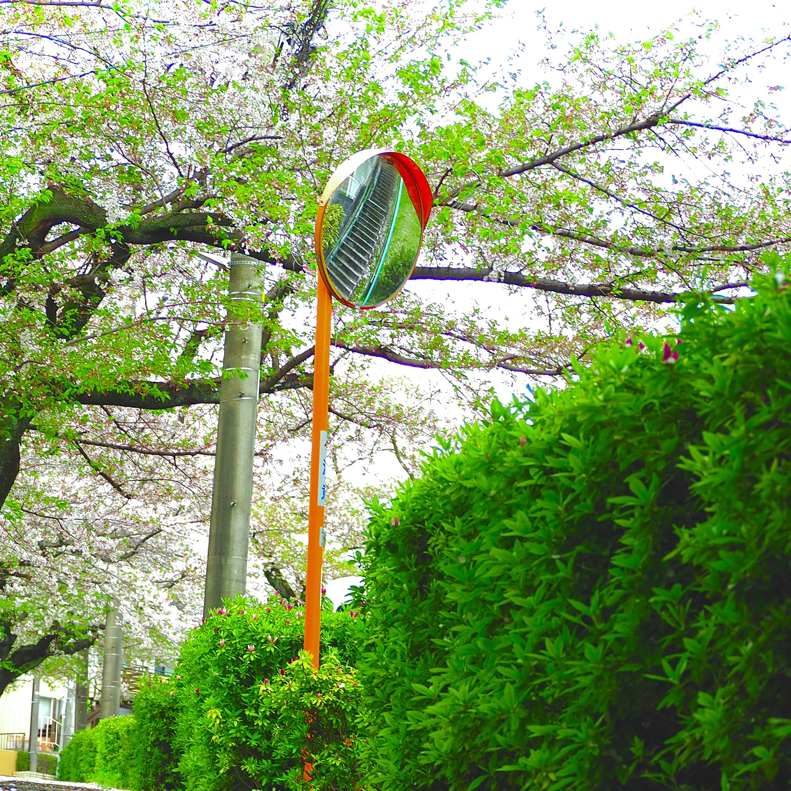

しりとる
はじめまして、しりとるです。
趣味はカメラ、アニメあと学マス(手毬P)です
私はプログラミングをHTMLから始めた民なのですが
そこからあんまり他の言語にチャレンジするつもりが出てこないで、そのままズルズルとWEB系の開発しかしてませんね...
他の言語に挑戦したいですがする気にあんまりなれないのでどうにかしたいお
今はバックエンド系のプログラムを作っています。冬コミまでには公開できると思いたい
以上！
キリ番踏んだらツイートして！！頼む！！まじで！！
★★★ようこそ！当サイトはしりとるが運営する個人サイトです!!!!!★★★

はじめまして、しりとるです。
趣味はカメラ、アニメあと学マス(手毬P)です
私はプログラミングをHTMLから始めた民なのですが
そこからあんまり他の言語にチャレンジするつもりが出てこないで、そのままズルズルとWEB系の開発しかしてませんね...
他の言語に挑戦したいですがする気にあんまりなれないのでどうにかしたいお
今はバックエンド系のプログラムを作っています。冬コミまでには公開できると思いたい
以上！
| プログラミング言語 | python / html / css / js / c+ |
|---|---|
| 3D・映像・デザイン | Fusion360 / Unity / Live 2d / aviutl / OBS / OM Workspace |
| 音響・イベント機材 | PA(音響とか行けます) / 映像操作卓全般 |
| 開発環境・ツール | vs code / Git / github / Terminal / windows 11 |
| ハード・ネットワーク | Raspberry pi / Wireshark |
たしか去年？の夏らへんに高尾山の真ん中あたりで撮った気がします。
多分手前に見えている高い建物が集まってるのは八王子で、地平線の奥の方に見えるやつが東京都心だと思います。
東京タワーかスカイツリーかわからないのがうっすらありますね
なんかこの頃埋め込みがあんま機能してないです ごめん
Posts by shiritoru_1 Follow @shiritoru_1
中の人は中学生です。
趣味はパソコンいじりが主ですね。そのほかにもほんのすこしくらいなら電子工作もできます。あと下の表に身の回りの物のスペックが書かれているのでぜひ読んでいってください
| パソコン | Surface Laptop Go 3 |
|---|---|
| CPU | core i5 |
| RAM | 8GB よわよわ |
| ディスプレイ1 | 1920x1080 27inc |
| ディスプレイ2 | 1536x1024 12.4inc |
| マウス | おじいちゃんからもらったノーブランドマウス |
| カメラ1 | zv-e10 学校からの借り物 ほぼ私のもの |
| カメラ2 | om-d em10 mark2 40-150mm 今のメイン機 |
| カメラ3 | minoltaの型番のわからんフィルムカメラ いつか使いたい |
| タブレット | xiaomi pad6 小5？の時の誕プレ |
ps.そういえば趣味で写真特定してるんです
それ用の画像が欲しいいんで暇があったら下のフォームにぶん投げてください
こ↑こ↓